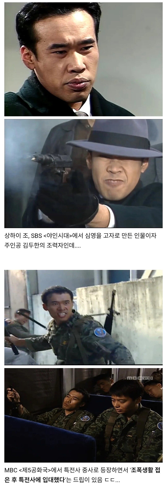

조폭생활 접고 특전사 입대한 야인시대 캐릭터.jpg
댓글
그와중에 컨츄리네
올ㅋ
재경여단 관상은 아닌듯
3공수는 확실히 아니겠네요 ㄷㄷ
"아이구... 이게 지금 뭐하는거야?!"
제대해서는 양식집에서 파스타볶으면서 웬 또라이 주방장 밑에서 개고생하더라ㅠㅠ
조폭 + 특전사 출신인데도 깝치지 못하네요 ㅠㅠ
저 시절은 조폭이 지명수배 걸렸을때 공수부대 입대하면 봐주고 그랬음
참고로 당시 특전병도 전투병력이었다 합니다 ㄷㄷ
막짤 존나 이등병 피방 데려간 상꺽 형 느낌이네
수송열차 장면입니다. ㅎㅎ
안되겠소 쏩시다!
타앙!!
???: 뭘 그렇게 보시오? 상하이요!
들린다 들려
올ㅋ
권총으로 달리는 알 두개를 정확히 명중시키는 실력인데 군인 안하는게 아깝긴 함
맞습니다 ㄷㄷ
고려거란전쟁에도 출연하신걸로 압니다 ㅎㅎ
특전사 제대하고 파스타집 취직했다가
적성에 안 맞았는지 고려시대로 전생해서 취업함
전생은 아니고 조상님인거 같네요 ㅎㅎ
사극에도 잘어울리더라 ㅋㅋ
맞습니다 ㄷㄷ
골든타임에서 정형외과 치프됨
올ㅋ
조선시대때는 인조 호위무사였는데
근데 실존인물 상하이조는 1924년생인데.... 당시 50대 중후반이라 상하이조 아들일수도 있습니다 ㅋㅋㅋㅋㅋㅋㅋ